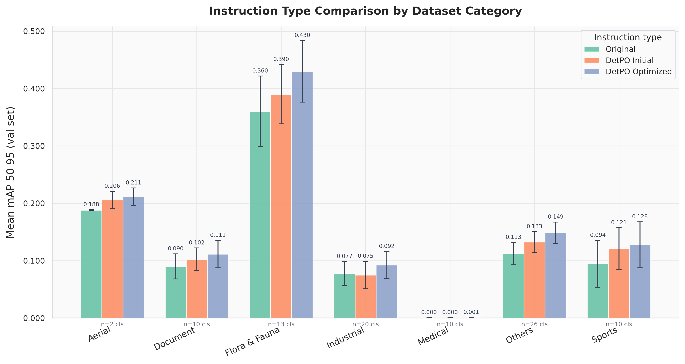
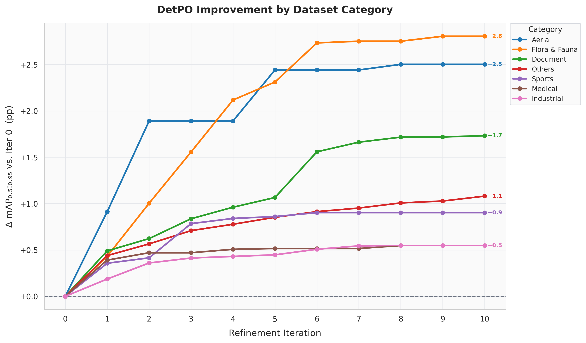

DetPO: In-Context Learning with Multi-Modal LLMs
for Few-Shot Object Detection

Detection Prompt Optimization. A frozen multi-modal LLM (MLLM) is presented with a class name, a textual description, and a few visual examples (left), similar to instructions given to a human annotator. Rather than presenting visual examples directly, we find it far more effective to use them to optimize a better prompt (right) via black-box prompt optimization; we use another MLLM to discover prompt instructions that perform better on the few-shot training dataset.
Abstract
Multi-Modal LLMs (MLLMs) demonstrate strong visual grounding capabilities on popular object detection benchmarks like OdinW-13 and RefCOCO. However, state-of-the-art models still struggle to generalize to out-of-distribution classes, tasks, and imaging modalities not typically found in their pre-training. While in-context prompting is a common strategy to improve performance across diverse tasks, we find that it often yields lower detection accuracy than prompting with class names alone. This suggests that current MLLMs cannot yet effectively leverage few-shot visual examples and rich textual descriptions for object detection.
Since frontier MLLMs are typically only accessible via APIs, and state-of-the-art open-weights models are prohibitively expensive to fine-tune on consumer-grade hardware, we instead explore black-box prompt optimization for few-shot object detection. To this end, we propose Detection Prompt Optimization (DetPO), a gradient-free test-time optimization approach that refines text-only prompts by maximizing detection accuracy on few-shot visual training examples while calibrating prediction confidence. Our proposed approach yields consistent improvements across generalist MLLMs on Roboflow20-VL and LVIS, outperforming prior black-box approaches by up to 9.7%.
Why Does Multi-Modal ICL Hurt Detection?
We benchmark several state-of-the-art MLLMs and find that naively adding few-shot visual examples to the prompt consistently hurts detection accuracy. We posit this arises from rigid prompt structures used during post-training, making it difficult to exploit additional multi-modal contextual information during zero-shot inference.
| Method | Class Names | Instructions | Images | mAP |
|---|---|---|---|---|
| Qwen2.5-VL (7B) | ✓ | ✗ | ✗ | 4.6 |
| Qwen2.5-VL (7B) | ✓ | ✓ | ✗ | 6.2 |
| Qwen2.5-VL (7B) | ✓ | ✓ | ✓ | 1.8 |
| Qwen2.5-VL (72B) | ✓ | ✗ | ✗ | 7.1 |
| Qwen2.5-VL (72B) | ✓ | ✓ | ✗ | 10.4 |
| Qwen2.5-VL (72B) | ✓ | ✓ | ✓ | 10.1 |
| Qwen3-VL (8B) | ✓ | ✗ | ✗ | 10.4 |
| Qwen3-VL (8B) | ✓ | ✓ | ✗ | 11.4 |
| Qwen3-VL (8B) | ✓ | ✓ | ✓ | 7.0 |
| Qwen3-VL (30B-A3B) | ✓ | ✗ | ✗ | 10.7 |
| Qwen3-VL (30B-A3B) | ✓ | ✓ | ✗ | 11.9 |
| Qwen3-VL (30B-A3B) | ✓ | ✓ | ✓ | 9.8 |
| Gemini 3 Pro | ✓ | ✗ | ✗ | 21.9 |
| Gemini 3 Pro | ✓ | ✓ | ✗ | 23.0 |
| Gemini 3 Pro | ✓ | ✓ | ✓ | 23.9 |
Method: Detection Prompt Optimization (DetPO)

DetPO Overview. DetPO generates initial class descriptions from ground-truth bounding boxes and iteratively refines them based on model predictions through contrastive prompt refinement. At each step, the model's true positives, false positives, and false negatives on the few-shot training set guide targeted improvements to the class description.
Contrastive Prompt Refinement
Unlike traditional detectors trained primarily on true positive examples, we find that MLLMs achieve higher detection accuracy when provided with corner cases and negative examples, similar to how human annotators learn from examples of what not to annotate. DetPO iteratively refines class descriptions by identifying the worst false positive (highest confidence incorrect detection) and worst false negative (lowest-IoU missed detection), and uses these to instruct the model to explicitly exclude incorrect examples and include missed instances.
Confidence Score Estimation via VQA Score
Current MLLMs often overpredict bounding boxes and lack per-box confidence scores. We find that prompting models to self-report per-box scores improves detection accuracy. Optionally, we post-process detections with VQA Score: for each predicted bounding box overlaid on the test image, we ask "Is this bounding box an instance of class {CLS}?" and use the normalized probability of the Yes token as the final confidence score. This significantly down-weights false positives and improves mAP.

Contrastive Prompt Refinement Reduces Class Confusion. At each iteration, we use the current class description to query the MLLM on the training set, identify true positives, false positives, and false negatives, and refine the prompt to correct errors. The highlighted text shows newly added details that differentiate Serve from Attack in a volleyball dataset.
Results
Roboflow20-VL Benchmark
We evaluate on Roboflow20-VL (RF20-VL), a few-shot object detection benchmark spanning 20 diverse domains including aerial imagery, X-rays, medical imaging, and wildlife monitoring. Each dataset provides 10-shot training examples and rich annotation instructions per class.
| Method | Aerial | Document | Flora & Fauna | Industrial | Medical | Sports | Other | All |
|---|---|---|---|---|---|---|---|---|
| Specialist Models | ||||||||
| GroundingDINO (C) | 28.5 | 5.1 | 33.7 | 12.8 | 0.4 | 5.1 | 16.9 | 16.8 |
| LLMDet (C) | 32.3 | 4.4 | 33.6 | 12.6 | 0.7 | 6.7 | 16.7 | 17.2 |
| SAM3 (C) | 32.3 | 15.3 | 17.1 | 13.8 | 2.0 | 14.2 | 17.8 | 16.3 |
| MQ-GLIP (C) | 30.1 | 2.5 | 32.8 | 5.5 | 0.5 | 6.4 | 10.8 | 14.0 |
| YOLO-E (C) | 10.2 | 1.6 | 16.4 | 8.1 | 0.3 | 7.8 | 10.9 | 9.2 |
| Generalist Models | ||||||||
| Qwen3-VL (30B-A3B) (C + I) | 9.0 | 7.8 | 23.5 | 9.6 | 0.7 | 14.4 | 10.1 | 11.9 |
| + GEPA | 9.3 | 12.4 | 23.6 | 10.8 | 1.3 | 15.1 | 11.3 | 13.0 |
| + MIPROv2 | 8.7 | 5.6 | 18.6 | 10.3 | 0.0 | 15.1 | 9.9 | 10.7 |
| + DetPO (Ours) + VQA Score | 16.1 | 25.2 | 36.5 | 20.1 | 0.2 | 25.7 | 18.4 | 21.6 |
| Gemini 3 Pro (C + I + V) | 27.0 | 26.7 | 31.3 | 26.2 | 2.6 | 26.9 | 13.3 | 23.8 |
| + GEPA | 19.2 | 30.6 | 32.1 | 32.7 | 2.0 | 28.2 | 20.8 | 25.6 |
| + MIPROv2 | 22.9 | 27.0 | 31.6 | 26.4 | 3.0 | 29.7 | 19.8 | 25.0 |
| + DetPO (Ours) + VQA Score | 26.2 | 35.7 | 35.4 | 23.3 | 3.9 | 28.2 | 20.4 | 26.3 |
DetPO Transfers Across Generalist Models
| Method | A | D | F & F | I | M | S | O | All |
|---|---|---|---|---|---|---|---|---|
| Qwen2.5-VL (7B) (C + I) | 4.9 | 5.1 | 13.5 | 3.9 | 0.1 | 7.3 | 5.0 | 6.2 |
| + DetPO | 6.2 | 12.1 | 19.3 | 4.2 | 0.0 | 9.1 | 7.5 | 9.1 |
| + DetPO + VQA Score | 9.4 | 17.3 | 23.4 | 7.2 | 0.0 | 12.8 | 8.8 | 11.9 |
| Qwen2.5-VL (72B) (C + I) | 6.3 | 10.7 | 19.0 | 7.5 | 0.4 | 14.4 | 9.1 | 10.4 |
| + DetPO | 11.1 | 23.0 | 26.1 | 12.4 | 0.5 | 14.8 | 14.9 | 15.7 |
| + DetPO + VQA Score | 10.8 | 26.3 | 26.7 | 13.0 | 0.5 | 16.7 | 15.0 | 16.5 |
| Qwen3-VL (8B) (C + I) | 7.1 | 7.3 | 24.8 | 9.3 | 0.2 | 10.2 | 10.9 | 11.4 |
| + DetPO | 8.3 | 19.1 | 30.3 | 13.7 | 0.1 | 14.2 | 12.2 | 15.3 |
| + DetPO + VQA Score | 12.3 | 24.2 | 32.3 | 13.5 | 0.2 | 17.2 | 14.3 | 17.5 |
| Qwen3-VL (30B-A3B) (C + I) | 9.0 | 7.8 | 23.5 | 9.6 | 0.7 | 14.4 | 10.1 | 11.9 |
| + DetPO | 13.8 | 18.6 | 34.6 | 19.7 | 0.1 | 21.8 | 16.4 | 19.4 |
| + DetPO + VQA Score | 16.1 | 25.2 | 36.5 | 20.1 | 0.2 | 25.7 | 18.4 | 21.6 |

Instruction Type Comparison. DetPO optimized prompts consistently improve detection accuracy across nearly all categories compared to baseline and initial prompts.

Iterative Accuracy Improvement. Most domains show strong initial gains that plateau around iteration 6, with Flora & Fauna and Aerial showing the largest overall improvements (+2.8 and +2.5, respectively).
Qualitative Results

Qualitative Results. The baseline Qwen3-VL model suffers from high false positive rates (dense, overlapping boxes) and poor recall in complex environments. Our proposed method mitigates these issues, significantly reducing erroneous predictions while successfully recovering missed objects (like wheat heads and fish). Best viewed zoomed in.

Detection Confusion Matrix. We compare Qwen3-VL (30B-A3B), Qwen3-VL with DetPO, and with VQA Score across the Actions, Wb-Prova, and Defect Detection datasets. DetPO and VQA Score consistently resolve baseline class imbalances, improving true positive rates for underrepresented subjects (Juvenile, Piglet) and nuanced actions (Defense, Serve).
Prompt Refinement Example
We show how DetPO progressively refines class descriptions. The highlighted text indicates newly added discriminative details:
Citation
If you find our paper and code useful, please cite us:
@article{gare2026detpo,
title={DetPO: In-Context Learning with Multi-Modal LLMs for Few-Shot Object Detection},
author={Gare, Gautam Rajendrakumar and Peri, Neehar and Popov, Matvei and Jain, Shruti and Galeotti, John and Ramanan, Deva},
journal={arXiv preprint},
year={2026}
}